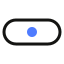

Dio GrindBY DIO_Exodi · FR
● live PWADEEP WORK · LIQUID FOCUS · STREAKS · CALM · DEEP WORK · LIQUID FOCUS · STREAKS · CALM ·

Grind in capsules.
Liquid timer, calm streaks, zero noise.


Setup in 10 seconds
25:00
focus
streak
0
days
Tasks
Statistics
Notifications
Strict mode
Backup